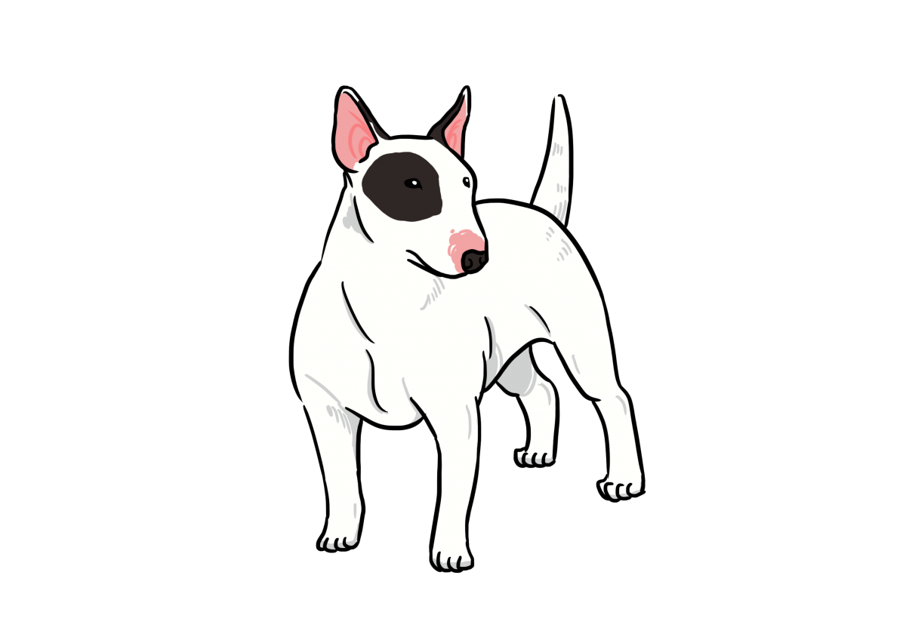
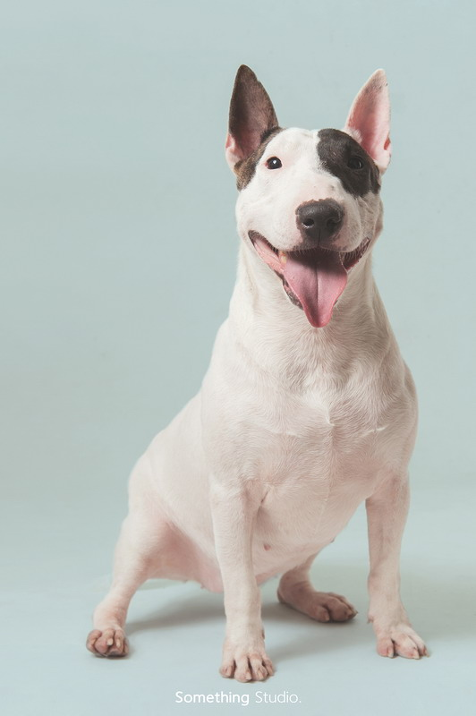
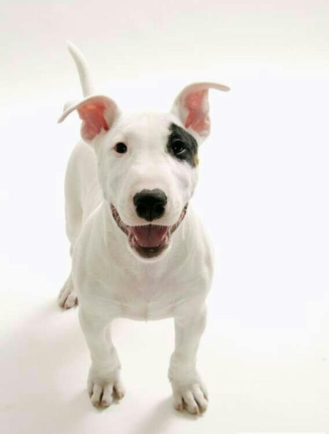
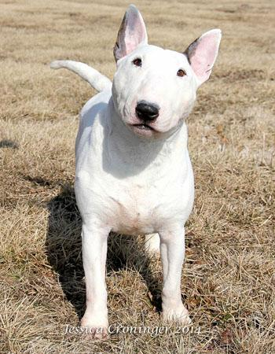

牛頭梗

外表
牛頭梗最有代表性的就是它的那張臉了。有人說，牛頭梗的臉有點像人，看上去有點滑稽。它們的臉部雖然很特別，但是它們的嘴部卻好似分具有力量，因為它們上下兩排牙齒其實非常發達，咬合力也比一般的狗狗要高。
性格
牛頭梗的性格其實有一點獨立和頑固，因此不太適合沒有養過狗狗的新手飼養。它們雖然攻擊力驚人，但是性格是比較平和，或許與它那副憨憨的外表相符吧。其實牛頭梗的外表還容易給別人造成錯覺，就是感覺這隻狗狗不太聰明的樣子。其實不然，牛頭梗其實很聰明，比很多狗狗都要容易訓練，所以以前才會被訓練用來比賽。其實牛頭梗的精力也很旺盛，喜歡玩耍，如果主人對它好，它同樣也會報答主人。
歷史
牛頭梗的來源大約可以追溯到1835年的英國，第一隻鬥牛梗是由鬥牛犬和現在已經滅絕的英國梗犬交配而成的，因而遺傳了這兩種狗狗的性格和身體特徵，後面經過不斷地品種改良，被廣泛用在了鬥狗的比賽上。1860年，詹姆斯.辛克斯培育出了一隻全白的牛頭梗，然後白色的牛頭梗一下子火了起來，它們常被當時的紳士帶在身邊，彰顯出一種時尚。它們英勇護主的性格，曾經一度被稱為是「白騎士」。
飼養注意事項
體型成長快速，再加上過於活潑，18個月後身體才算發育成熟，成熟期後再進行激烈的運動比較妥當
精力過於旺盛，每天基本需求：早晚各30分鐘左的散步運動
對人類、孩童非常友善，但對其他的狗存有很重的競爭心
有高機率的遺傳性腎相關疾病及先天性心臟疾病
容易有遺傳性膝關節脫臼，雖可透過手術矯正，但容易產生關節炎等後遺症


